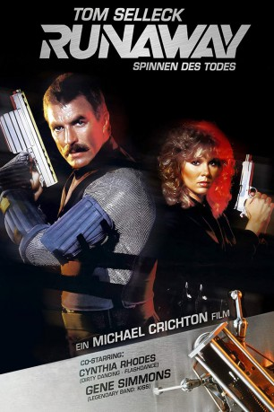
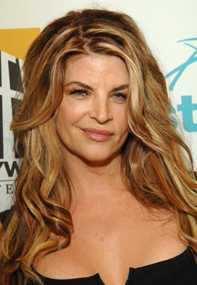
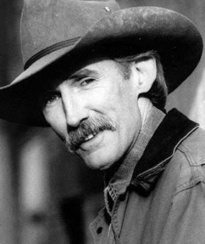
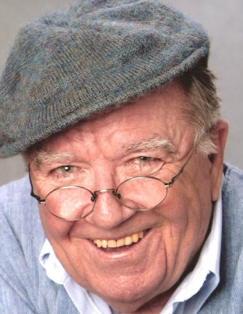

#10282 Runaway - Spinnen des Todes
Alternativ: Runaway (Englischer Titel)
 
 IMDB-Wertung: 5.9 / 10
IMDB-Wertung: 5.9 / 10  Metascore: 50
Metascore: 50 
Science-Fiction-Streifen von Michael Crichton aus dem Jahre 1984, in dem sich Roboter in Killermaschinen verwandeln. Ein Wissenschaftler namens Charles Luther hat ein Todes- Chip erfunden, der die friedliche Roboterwelt in wahnsinnige Maschinenmörder verwandelt. Sergeant Jack Ramsey macht sich mit seinem Überwachungsteam auf, den Wissenschaftler zu schnappen.
Jahr: 1984
Dauer: 100 Minuten
FSK: 16
Land: USA Studio: TriStar PicturesTonspuren:
Untertitel:
Auflösung: 1080p (1920x816) Größe: 7905 MB
Genre: Action, Thriller, Sci-Fi, Krimi
Regisseur: Michael Crichton
Drehbuch: Michael Crichton
Soundtrack: Jerry Goldsmith
Darsteller:
 Tom Selleck als Jack Ramsay
Tom Selleck als Jack Ramsay- Cynthia Rhodes als Thompson
 Gene Simmons als Luther
Gene Simmons als Luther-  Kirstie Alley als Jackie Rogers
 Stan Shaw als Marvin
Stan Shaw als Marvin G.W. Bailey als Chief
G.W. Bailey als Chief- Joey Cramer als Bobby Ramsay
 Chris Mulkey als Johnson
Chris Mulkey als Johnson- Anne-Marie Martin als Hooker at Bar
 Michael Paul Chan als Wilson
Michael Paul Chan als Wilson- Carol Teesdale als Sally
- Babs Chula als Construction Foreperson
- Cec Verrell als Hooker
- Judy Johns als Data Tech
- Stephen Thorne als Tommy
 Stephen E. Miller als Rudy
Stephen E. Miller als Rudy-  David Longworth als Man
- Moira Walley-Beckett als Jogger
- Deryl Hayes als Cop #4
 Lloyd Berry als Passenger
Lloyd Berry als Passenger- Deborah Fallender als Alley Voice #4
-  Terrence Beasor als Farm Voice #1
 Daamen J. Krall als Police Voice #3
Daamen J. Krall als Police Voice #3- Amber Borycki als Baby (uncredited)
- Faye Yvette McQueen als Subway Rider (uncredited)
- Elizabeth Norment als Miss Shields
- Jackson Davies als Inspector
- Paul Batten als Harry
- Marilyn Schreffler als Lois' Voice
- Natino Bellantoni als Headwaiter
- Betty Phillips als Linda
- Andrew Rhodes als Cameraman
- Louise Johann als Waitress
- Steve Wright als Pilot
- Bob Metcalfe als Tracer
- Todd Duckworth als Paramedic
- Albert Eggen als Floater Cop
- Jon Brydon als Cop #1
- Rodney Gage als Cop #2
- Murray Ord als Cop #3
- Keith Martin Gordey als Cop #5
- Wayne York als Cop #6
- Frank Serio als Cop #7
- Dennis Kelli als Driver
- Richard Pittman als Alley Voice #1
- Tom Amundsen als Alley Voice #2
- Judi M. Durand als Alley Voice #3
- James E. Carter als Farm Voice #2
- Billy Hank Hooker als Farm Voice #3
- Barbara Harris als Police Voice #1
Datei: X:\1984\Runaway - Spinnen des Todes (1984, FSK16, 1920x816).mkv seit 29.12.2018
Festplatte: HD 1980-1986
 Es gibt insgesamt 46 Filme in der Gruppe '1984'
Es gibt insgesamt 46 Filme in der Gruppe '1984'